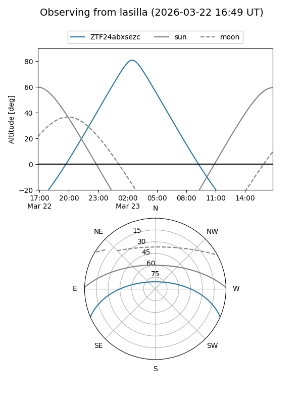
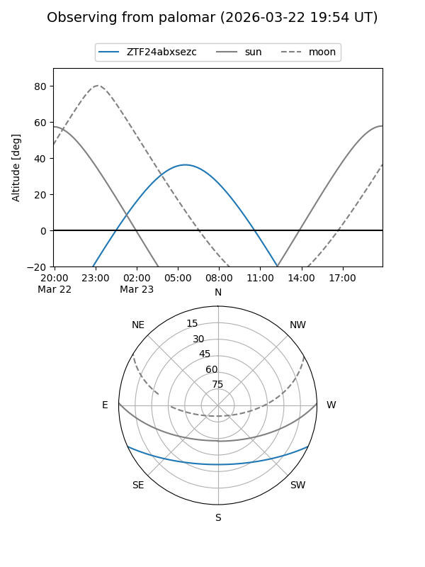

ZTF24abxsezc
Target ZTF24abxsezc at 2026-03-23 09:08
Aliases and brokers:
FINK: link
Lasair: link
ALeRCE: link
alt names
ZTF24abxsezc (ztf,fink_ztf)
Coordinates:
equatorial (ra, dec) = 146.5666,-20.16444
equatorial (HMS+DMS) = 09:46:15.99,-20:09:52.00
galactic (l, b) = (254.5361,+24.83964)
Flags:
Photometry:
last ztfg=16.66
1 ztfg detections
Lightcurve
Visibility


Additional plots